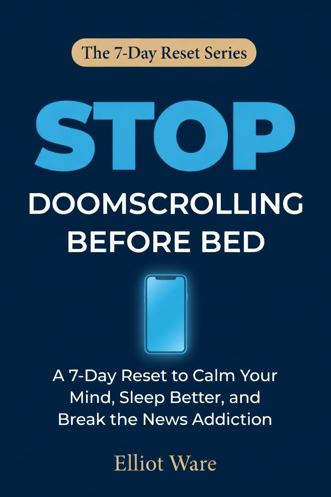
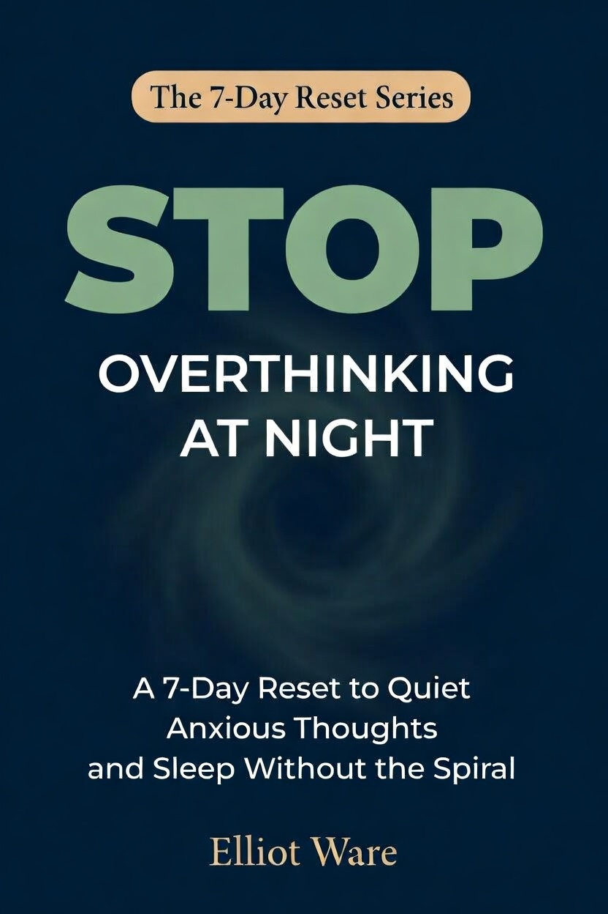
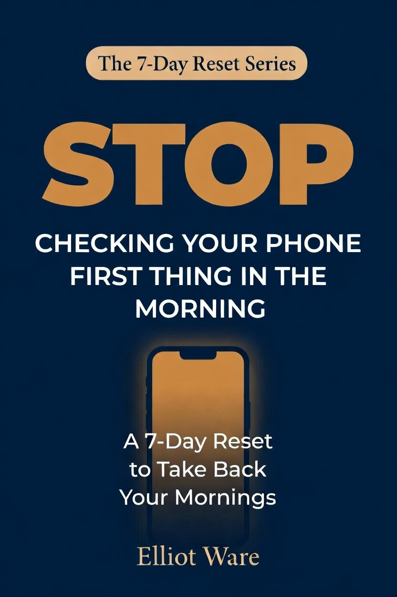

The 7-Day Reset Series
These books are for people who are done diagnosing the problem and ready to fix it. Seven days. One habit. A practical path out.
See the booksEach book targets one specific habit. Read them in any order, or follow the sequence.

You pick up your phone at night meaning to check one thing. An hour later you're more anxious, more tired, and no closer to sleep. This seven-day reset targets the trigger, the environment, the routine, and the recovery plan.

Overthinking isn't a personality type. It's a habit. A well-practised, thoroughly reinforced habit with specific triggers and a pattern that gets stronger every night you run it. This book shows you how to break it.

The alarm goes off and before you've thought a single thought of your own, your hand finds the phone. By the time you put it down, your morning is already someone else's. This reset changes that in seven days.
Each book has a printable worksheet that walks you through all seven daily exercises. Keep it next to the book, or use it on its own as a reference while you work through the reset.
No email required. Download and use them.
The 7-Day Reset Series is built on one assumption: you already know you have a problem. You don't need more convincing. You need a concrete path out.
Each book focuses on a single habit, a specific window of the day where something has gone wrong, and gives you a seven-day, practical plan to change it. No vague mindset advice. No month-long overhauls. Just one focused task per day, a sequence that builds on itself, and a maintenance structure that holds when life gets difficult.

Elliot Ware writes practical guides on digital habits, sleep, and mental clarity. His books focus on one thing: giving people simple, workable systems for the problems that quietly drain them every day.